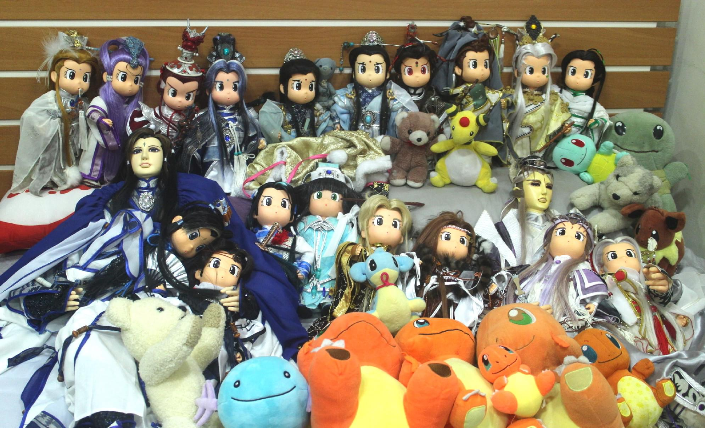

關於二歪
你好，我是二歪 Erwai / FutatsuWai
跟風來發個介紹文hhh 雖然應該不會有什麼人看
主要在噗浪上活動！我的噗浪地址：https://www.plurk.com/erwai
目前鎖河道中，但歡迎傳訊息勾搭我> <
布袋戲主萌
主要是萌布袋戲，目前只有看霹靂跟東離。神魔觀望中。
- 東離劍遊紀完食。上電影院看過生死一劍。坐等東離二！
- 霹靂布袋戲目前看的範圍是：風起雲湧～神州三天罪(卡在天罪非常久了，補劇進度極慢)。另外兵烽決完食。
掉布袋戲坑掉到有點無法自拔，覺得三次元世界不太萌得起來了。
習慣沒表情的木偶表情豐富（？），而三次元真人劇幾百年沒看任何一部了。ＱＱ
動畫漫畫有看一些，但都滿老的XD有時候我看到相關噗會浮起來冒泡！
只有萌點沒有雷點
歡迎勾搭，不用怕踩地雷！因為我沒地雷！（真心的！）
我對於CP跟角色的態度是一切OK，拆逆隨意、拉郎配、跨棚配，BL BG GB GL，開心就好！
萌了就是王道！
總之，我沒有任何雷的配對，頂多是無感。
如果我發了什麼你雷的CP就消音我吧！如果真的很雷，我又一直發，可能我們不適合當噗友吧（默）我萌的資訊在下方[本命/牆頭資訊]喔！
不吃的文種/配對（但一樣不雷、不在意別人萌/轉）
- 生子
- 有血緣關係的配對eg.父子、兄弟。收養或結拜的就沒差，eg.問鬼、白黑（劍少）
- 性轉
- 拉郎
本命/牆頭資訊
- 本命：皇甫定濤、練峨眉、素續緣
- 大牆頭：慕少艾、羽人非獍、師九如
牆頭：不計其數！！！基本上是博愛黨＋正道控，而且特別控道門。
新角色喜歡的有：藐烽雲(喵喵我的愛！！)、挹天癒
舊劇中喜歡的有：藺無雙、蒼、墨塵音、荻神官、沖田鷹司、韶雲、佾雲、曲雲、四無君、問天譴、鬼伶仃、金子陵、白城輿、邪影
所有牆頭名單我還得整理一下XDDDDCP：濤沙/風濤（BG官配）、藺練（BG非官配），師策、佾曲、慕羽、赭墨、問鬼、棄蒼、癒治(癒藐)……等等
基本上有確定官配BG的我都吃，而且不會再幫男方配BL配對。
偶娘＋娃娘
我是18隻雨娃的娘，目前有兩隻大偶，正在等另一隻自創的大偶回家。
雨娃名單（照來到我家先後順序排）：
1.素小餅（素續緣）
2.仙貝（練峨眉）
3.4.太陽餅（佾雲）、芋泥餅（曲雲）
5.6.養生餅（慕少艾）、綠豆牛奶冰（羽人非獍）
7.草莓巧克力（藺無雙）
8.9.蔥油餅（蒼）、草莓雪糕（赤雲染）
10.11.藍莓酥（師九如）、聖代（策馬天下）
12.麻辣鍋（荻神官）
13.14.紅龜粿（赭杉軍）、芝麻湯圓（墨塵音）
15.16.17.消化餅（皇甫定濤）、提拉米蘇（風飛沙）、雪花餅（沖田鷹司）
18.小小餅（素續緣）
大偶名單：
- 花花（一版蒼）
- 泡泡（師九如）
- 懷谷（自創偶）

技能點
- 小小的剪刀手：MV產量目前10+支，希望復產中… YouTube頻道
- 手繪：素描＆水彩。喜歡畫水彩！另外也會用麥克筆。 Pixiv
- 音樂：鋼琴＆二胡。以前有賣藝過（拍影片上傳），現在基本上也是停產中…
- 3D：這是一個謎樣的技能，以前有學過建模，但很菜就是了，目前荒廢中。
- 外拍：常常出門幫我家孩子拍照，不過拍照技能大概只有按快門這一項ＸＤ
關於二歪＆噗的內容
廢噗非常之多！
- 少數噗會有關於三次元工作上的吐槽。
- 某些是其他二次元動漫(主要是進擊的巨人)。
- 劇情噗：大部分都是舊劇的劇情吐槽or感想，有雷會標。
- 其他噗：不定期掉落一些拙作。